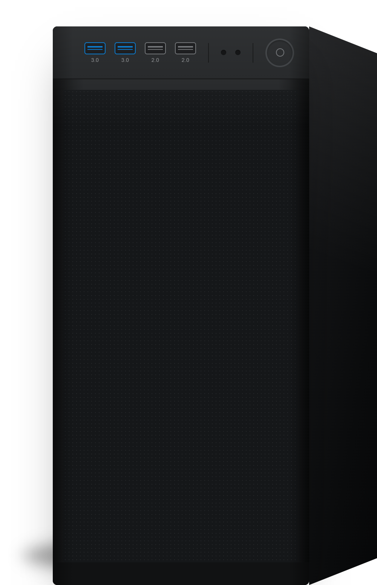

Windows 11 설치 시뮬레이션
실제 설치 화면 그대로 따라해 보는 연습용 시뮬레이터
⚠ 이 프로그램은 시뮬레이터이며, 실제로 Windows를 설치하지는 않습니다. ⚠
⚠ 본 사이트는 Microsoft의 공식이 아니며, 학습 목적으로 개인이 제작한 비공식 사이트입니다. ⚠
실제 설치 화면 그대로 따라해 보는 연습용 시뮬레이터
⚠ 이 프로그램은 시뮬레이터이며, 실제로 Windows를 설치하지는 않습니다. ⚠
⚠ 본 사이트는 Microsoft의 공식이 아니며, 학습 목적으로 개인이 제작한 비공식 사이트입니다. ⚠
USB 아이콘을 눌러 데스크탑 위쪽 포트에 꽂아보세요.

Windows 11 25H2 설치 과정을 모두 마쳤습니다.